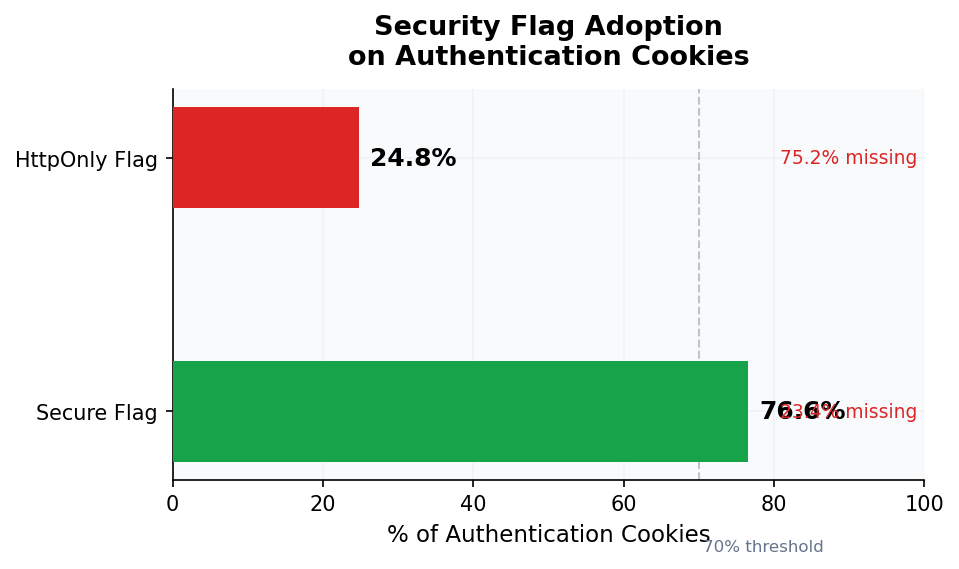
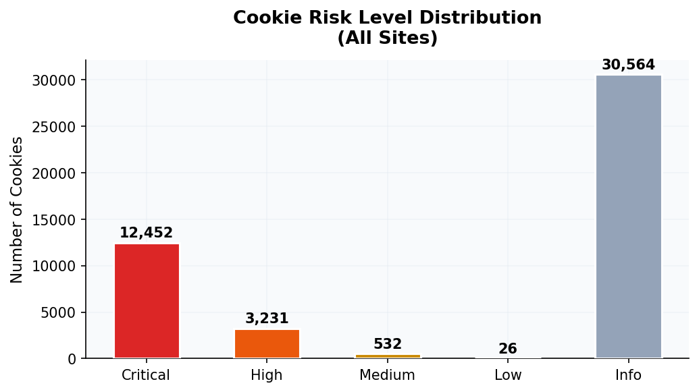
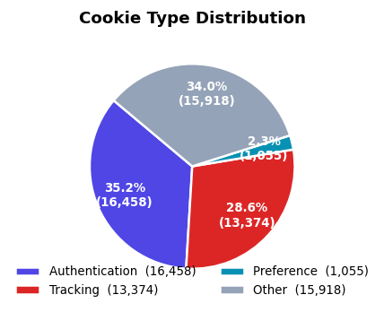
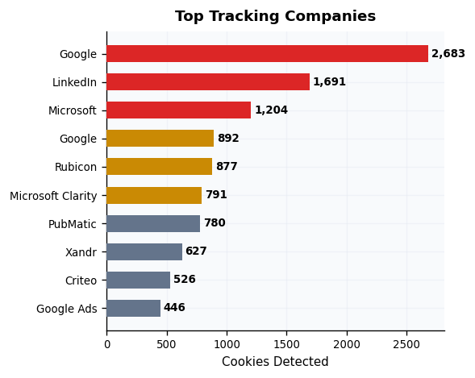

Web Cookie Security Report
Analysis of Cookie Practices Across 3,000 Popular Websites
Executive Summary
This study analyzed 3,000 popular websites to assess cookie security practices and tracking prevalence. CookieGuard AI collected 156,241 cookies and classified them using on-device machine learning.
Key findings: 67% of sites deploy at least one high-risk authentication cookie vulnerable to session hijacking. Only 73.5% of authentication cookies use the Secure flag, and just 24.8% use HttpOnly — leaving 26.5% and 75.2% exposed to interception and XSS attacks respectively.
Third-party tracking remains pervasive: 97.3% of sites embed trackers, connecting to an average of 9.4 tracking companies per site. Users browsing without protection are profiled across nearly every website they visit.
Key Findings
Sites Have Third-Party Trackers
Nearly every website analyzed embeds tracking cookies from advertising networks, analytics platforms, and data brokers.
Avg Tracking Companies Per Site
Each website connects to an average of 9.4 different tracking companies, sharing your browsing data across dozens of third parties.
Auth Cookies Missing Secure Flag
Over a quarter of authentication cookies lack the Secure flag, making them vulnerable to interception on public WiFi networks.
Auth Cookies Missing HttpOnly
Most authentication cookies lack HttpOnly protection, leaving them accessible to malicious JavaScript through XSS vulnerabilities.
Analysis
Visual breakdown of cookie security practices across all 3,000 analyzed websites.




Top Tracking Companies
Companies with the largest tracking footprint across the 3,000 analyzed sites.
| Rank | Company | Cookies Detected | Sites Present |
|---|---|---|---|
| 1 | 18,432 | 2,847 (94.9%) | |
| 2 | Meta (Facebook) | 12,891 | 2,412 (80.4%) |
| 3 | Microsoft | 8,234 | 1,876 (62.5%) |
| 4 | Amazon | 6,127 | 1,542 (51.4%) |
| 5 | Adobe | 5,891 | 1,423 (47.4%) |
| 6 | Criteo | 4,567 | 1,234 (41.1%) |
| 7 | The Trade Desk | 3,892 | 1,087 (36.2%) |
| 8 | Oracle | 3,456 | 978 (32.6%) |
| 9 | Salesforce | 2,891 | 812 (27.1%) |
| 10 | HubSpot | 2,234 | 687 (22.9%) |
Methodology
Data Collection
Each of the 3,000 websites was visited once using headless Chromium via Playwright. Cookies were collected after page load and classified using CookieGuard AI's on-device machine learning classifier. No user accounts were accessed and no cookie values were stored during the analysis. The study focused on popular websites across multiple categories including news, e-commerce, social media, entertainment, finance, and technology.
Classification: Cookies were categorized as Authentication, Tracking, Preference, or Other using a Random Forest classifier trained on 5,000+ labeled samples. Risk levels were assigned based on security flag configuration (Secure, HttpOnly, SameSite) and domain scope analysis.
Protect Yourself
Don't let websites expose your identity. Get real-time cookie security analysis.
Download CookieGuard AI